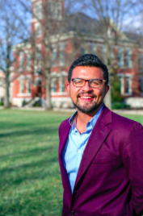
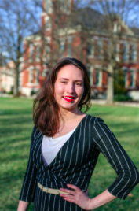
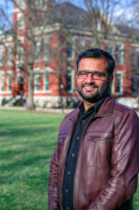
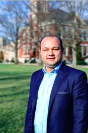

Partnered with the Missouri School of Journalism

Mission
Alfred Friendly Press Partners bonds with journalists and news organizations from information hungry societies and prepares them to practice professional, ethical, and innovative journalism. We accomplish our mission through hands-on training in U.S. and international newsrooms and within the Missouri School of Journalism.
Alfred Friendly Press Partners is the leader in transforming journalists who are recognized as vital to journalism excellence, press freedom, and informed citizenries. We advance our vision through our fellows, our lifelong relationships with them and the subsequent trusting relationships to international newsrooms we are able to develop through them, and the network of training resources and expertise we are able to capture and tailor for fellows and international newsrooms.
Meet the 2018 Fellowship Class
-

Farah Ajlouni
-

Samarth Bansal
- 
Juan Luis Garcia
- 
Anna Yakutenko
- 
Gulam Jeelani
-

Ankur Paliwal
-

Aleksandra Denkovska Gocevska
-

Danche Azmanova
- 
Ivan Kuzmanovski
-

Krenar Sadiku
-

Nikola Krstikj